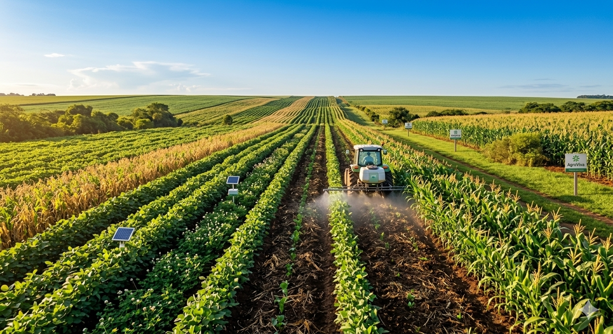
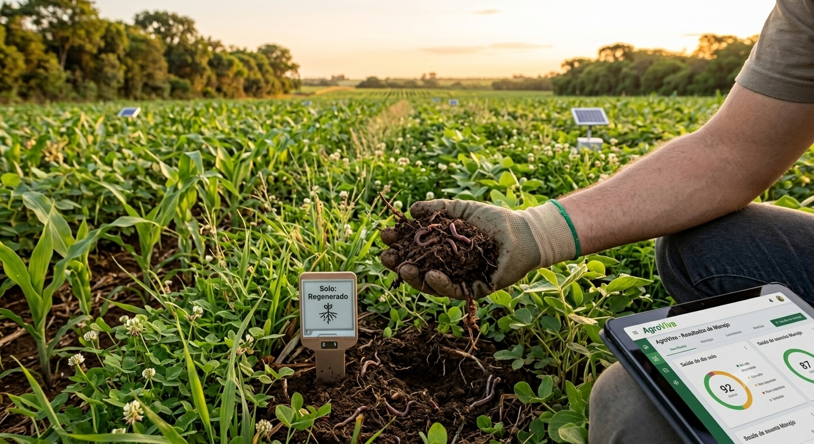

Rotação de Culturas
Alternamos espécies na mesma área para quebrar ciclos de pragas, enriquecer o solo e estimular maior equilíbrio biológico.
A AgroViva conecta manejo regenerativo, monitoramento inteligente e eficiência no campo para gerar mais resultado com respeito ao solo, à água e às próximas gerações.
Integramos processos modernos para reduzir desperdícios, melhorar a produtividade e preservar o equilíbrio ambiental.
Alternamos espécies na mesma área para quebrar ciclos de pragas, enriquecer o solo e estimular maior equilíbrio biológico.
Sensores, mapeamento e análise estratégica ajudam na aplicação exata de recursos, reduzindo custos e aumentando a eficiência.
Soluções biológicas contribuem para uma lavoura mais saudável e para a redução gradual da dependência de produtos agressivos ao ambiente.
A AgroViva acredita que a terra é um ecossistema vivo. Por isso, promovemos práticas regenerativas com apoio de tecnologia para construir uma produção mais estável, inteligente e responsável.
Nosso compromisso é unir tradição agrícola e inovação digital para entregar segurança produtiva, gestão eficiente e visão de longo prazo.
O uso de drones amplia a capacidade de monitoramento da lavoura, facilita diagnósticos visuais e fortalece ações de precisão em grandes áreas produtivas.

Mantivemos apenas as imagens originais e ampliamos a experiência com conteúdo interativo e organização visual moderna.


Planejamento de insumos, leitura de dados e monitoramento contínuo ajudam a reduzir desperdícios e melhorar a resposta da operação em campo.
Adoção de bioinsumos, rotação de culturas e manejo regenerativo fortalecem o solo, apoiam a biodiversidade e colaboram para ciclos produtivos mais saudáveis.
Drones, sensores e leitura estratégica das áreas cultivadas elevam a precisão das decisões e ampliam a capacidade de adaptação no campo.
É a combinação de produtividade com responsabilidade ambiental, uso eficiente de recursos, preservação do solo, da água e adoção de técnicas regenerativas.
Nem sempre de forma imediata. Em muitos contextos, eles entram como parte de uma transição estratégica para modelos mais equilibrados e menos agressivos.
Ela melhora o monitoramento, dá mais precisão nas decisões, reduz desperdícios e ajuda a detectar oportunidades e riscos com mais rapidez.
Envie sua mensagem e receba um retorno com foco em soluções para o campo.